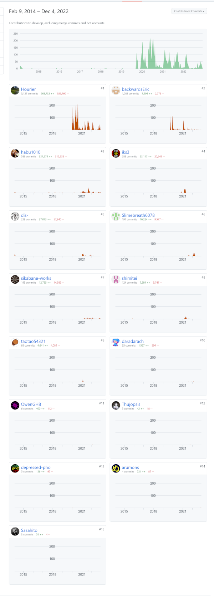
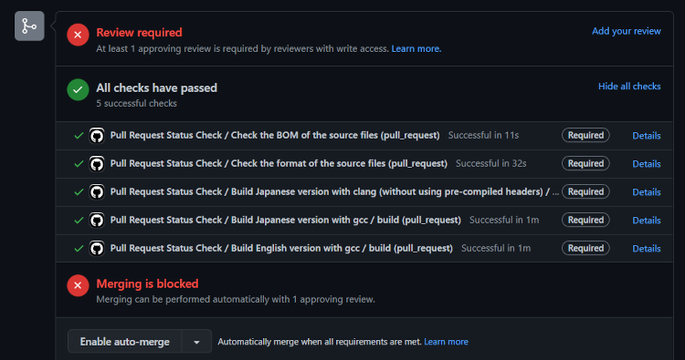

※本文は少々乱文気味です。後日追記します。
本記事はRoguelike Advent Calendar 2022の三日目の記事を兼ねつつ、変愚公式より記事とさせていただきます。
内容としてタイトル通り、ローグライクのプレイでなく、開発を行う側、特にある程度C/C++とGitHubサービスの利用もご存じの人前提となります。ご了承ください。
ここ約2年、惰性で公式Webを放っておいて、変愚蛮怒のAlpha版更新や個人的には2021年エイプリルフールのネタにもさせてもらったアレなバリアントの製作を重ねておりました。Deskullでございます。
予てより開発の進捗確認からの定期リリース広報などは私の仕事でありましたが、2021年2月からOSDNからGitHubへの公式の移管を進めている間にも本ページ自体は
長らく放置して、つい最近までOSDNのロゴまでそのままでした。
怠慢そのものであります。最近になって慌ててvue.jsなど導入して今時のWebに機能面強化しようと思っています。ゆるして。
変愚本体の進捗はというとどうでしょう。とうに3.0.0の正式版か、せめてBeta版にでも進めばいいものをどうしてAlphaで留まっているのは何故かなといえば、
これは相変わらず、*bandバリアントの定めです。Angband2.7の頃より煮詰めたる「秘伝のソース」をどうにかしようと特に頑張っているために中々進みません。
新しいネタを導入したい、しかしその導入するには過去の絶望な保守性のコードを克服しないと先に進めない、という点については大体現状のスタッフ
全員が暗黙にも公然にも了解するところとなっておりまして、Discordの「#変愚蛮怒開発」チャンネルでは日々、これは20～30年越しの今となってはC++では
こうだろう、いや、そもそも20～30年前のCの水準でも普通はここで構造体、共用体使うもんだったよな、グローバル変数渡しもマジックナンバーも糞だよ糞！みたいな話がまだ浮かんでおります。
一方でどこかでキリ良く、コード上の既存の改変より新要素の追加を重点に置いたBetaへの移行もさっさとすべきではないかとの意見、考えもありまして、
この辺りは私Deskullの裁量でいい加減に〆切を定めたいところであります。
その辺りについてはまたDiscordなどで引き続き相談しながら、定めたいところなのではありますが本題はこれです。
contributor to hengband/hengband

本日2022年12月4日時点の変愚GitHubページより見えるコントリビュータの一覧が以下の通り、各人何コミット、何行コードを追加修正やってきたかが一目瞭然となるわけで。
コミット数順に並べると一位はHourier氏、リファクタリングの実働部分大半が彼の功績です。
二位backwardsEric氏にはGithubに移行して以来、疾風のように現れて、当時からクッソいい加減だった和訳の指摘、Linux系ビルドで発生した問題などを随所細かに指摘いただいた結果のこの順位です。
三位habu氏はおなじみ混沌の覇者やっていただいている変愚初期からの開発勢。Github上の自動テストなどの継続的インテグレーションの構築、ソースの改善をどうすべきか、C++17/20といった最新の規格をどう扱うべきか等、技術的なリーダーシップを今も取ってもらっています。
私Deskullの立場どこ……ここ……？その他、過去であっても、２、３度程度のソース寄稿であってもGithubはきっちり記録を残してくれています。これらの人々に感謝しつつ、素晴らしい提案をしよう。
お前もコントリビュータにならないか？
申し訳ない、時間がないので丁寧な手順については今回は略します。
まずやっていただくことは、Githubでオープンソース運用をする際のセオリー通りです。自身のGithubアカウントを取り、変愚蛮怒のマスターリポジトリからフォークをしましょう。
自身のクライアントで開発するためにgitの導入は不可欠です。WindowsならばVisualStudio、LinuxならばGCCビルド環境を準備し、gitでcloneをかけてクライアントにリポジトリを作成すればまず開発環境はOKです。
具体的に何に貢献してもらうには、大きく分けて三つあるでしょう。
以上を済ませてマスターリポジトリにプルリクエストを行えば、GitHub内で自動テスト、及び開発スタッフ内でのレビューが行われます。
レビューが通ってマージが行われれば、晴れてコントリビュータの一員です。ありがとうございます！